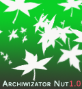

Informacje o stronie:
O projekcie...
Projekt realizowany od 10-06-2016 roku. Donec commodo, est diam, venenatis arcu. Vestibulum iaculis. Curabitur quam et imperdiet sapien. Fusce nulla facilisis sem id mi mauris, rutrum lorem. Cras non sem. Przewidywany czas realizacji projektu: koniec wakacji 2016.
Autorem oprogramowania Archiwizator Nut 1.2, jest JK.
O wersji..
Wersja oprogramowania: 1.2
Funkcjonalności:
- Dodawanie utworów do bazy
- Dodawanie książek do bazy
- Odczyt całej zawartości
- Walidacja danych
- Zapis i trwałość bazy danych
- Konta użytkowników- nowe
- Uprawnienia użytkowników- nowe
- Zastosowanie uprawnień do korzystania z systemu- nowe
- Wyszukiwarka utworów- nowe
- Informowanie o spotkaniu- nowe
- Wykaz ksiązkowy- nowe (vs.1.2)
Projekt jest ciągle usprawniany, dodawane są nowe funkcje. Mogą zdarzać się błędy. O każdych nowościach, które zostały dodane, można przeczytać właśnie w tym miejscu.